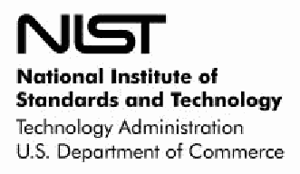
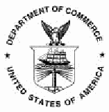
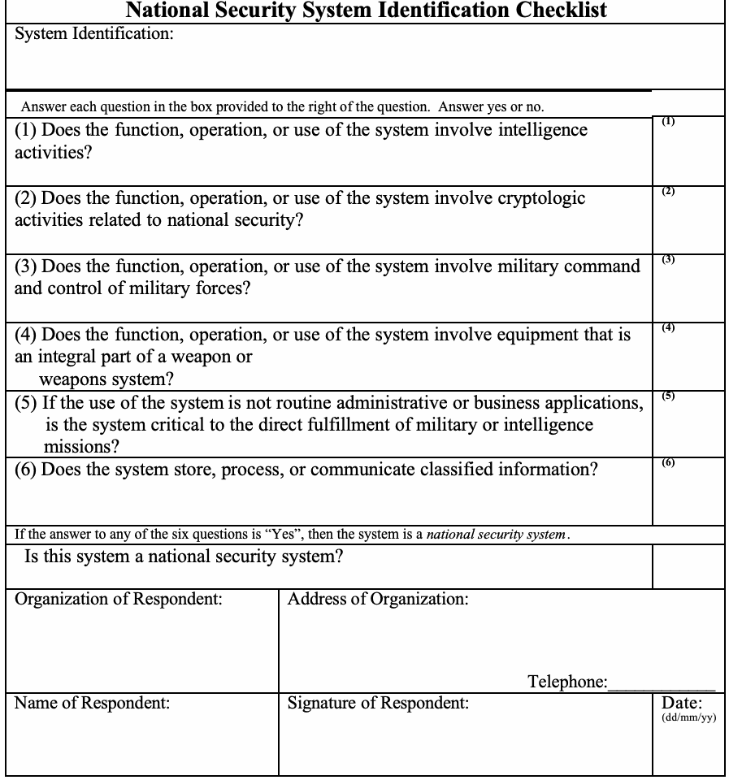

NIST Special Publication · PDF 原文抽出
Guideline for Identifying an Information System as a National Security System
国家安全保障システムの識別に関するガイドライン
NIST SP 800-59（Guideline for Identifying an Information System as a National Security System）の英文と日本語訳を段落ごとに並べた閲覧用ページです。情報システムが国家安全保障システムに該当するかを識別するため、関連用語の定義、法的・行政上の根拠、チェックリストとその記入指針を示します。 翻訳は非公式です。要件の確認にはNIST の正式版 PDFを参照してください。
PDF から抽出した原文は原本との照合待ちです。
NIST Special Publication 800-59
NIST特別刊行物800-59
Guideline for Identifying an Information System as a National Security System
情報システムを国家安全保障システムとして識別するためのガイドライン

NISTロゴ（国立標準技術研究所、技術管理局、米国商務省）
William C. Barker
William C. Barker
INFORMATION SECURITY
情報セキュリティ
Computer Security Division Information Technology Laboratory National Institute of Standards and Technology Gaithersburg, MD 20899-8930
コンピュータセキュリティ部門 情報技術研究所 国立標準技術研究所 Gaithersburg, MD 20899-8930
August 2003
2003年8月

米国商務省の紋章
U.S. Department of Commerce Donald L. Evans, Secretary
米国商務省 長官 Donald L. Evans
Technology Administration Phillip J. Bond, Under Secretary of Commerce for Technology
技術管理局 技術担当商務次官 Phillip J. Bond
National Institute of Standards and Technology Arden L. Bement, Jr., Director
国立標準技術研究所 所長 Arden L. Bement, Jr.
Reports on Computer Systems Technology
コンピュータシステム技術に関する報告書
The Information Technology Laboratory (ITL) at the National Institute of Standards (NIST) promotes the U.S. economy and public welfare by providing technical leadership for the Nation’s measurement and standards
国立標準技術研究所（NIST）の情報技術研究所（ITL）は、米国経済と公共の福祉を、国家の測定と標準の
未レビュー訳infrastructure for information technology. ITL develops tests, test methods, reference data, proof of concept implementations and technical analyses to advance the development and productive use of information technology. ITL’s responsibilities include the development of technical, physical, administrative, and management standards and guidelines for the cost-effective security and privacy of sensitive unclassified information in federal computer systems. This Special Publication 800 series reports on ITL’s research, guidance, and outreach efforts in computer security, and its collaborative activities with industry, government, and academic organizations.
情報技術のためのインフラストラクチャ。ITLは、情報技術の開発と生産的な利用を進めるため、試験、試験方法、参照データ、概念実証実装、および技術分析を開発する。ITLの責務には、連邦コンピュータシステムにおける機微な非機密情報の費用対効果に優れたセキュリティとプライバシーのための技術、物理、管理、およびマネジメントの標準とガイドラインの開発が含まれる。本特別刊行物800シリーズは、コンピュータセキュリティに関するITLの研究、指針、普及活動ならびに産業界、政府、学術機関との協力活動を報告する。
National Institute of Standards and Technology, Special Publication 800-59 Natl. Inst. Stand. Technol. Spec. Publ. 800-59, 21 pages (August 2003)
国立標準技術研究所、特別刊行物800-59 Natl. Inst. Stand. Technol. Spec. Publ. 800-59、21ページ（2003年8月）
SP 800-59
SP 800-59
PAGE ii
ページ ii
Table of Contents
目次
GUIDELINE FOR
以下に関するガイドライン
未レビュー訳IDENTIFICATION OF INFORMATION SYSTEMS AS
次のものとしての情報システムの識別
未レビュー訳NATIONAL SECURITY SYSTEMS
国家安全保障システム
Table of Contents.....................................................................................iii
目次.................................................................iii
1.0 Introduction — 1
1.0 はじめに — 1
2.0 Basis for Identification of National Security Systems — 3
2.0 国家安全保障システムの識別根拠 — 3
3.0 Method for Identifying National Security Systems — 5
3.0 国家安全保障システムの識別方法 — 5
3.1 Determination of Responsibilities — 5
3.1 責任の決定 — 5
3.2 National Security System Identification Checklist — 6
3.2 国家安全保障システム識別チェックリスト — 6
3.3 Dispute Resolution — 6
3.3 紛争解決 — 6
Appendix A: National Security System Identification Checklist — 7
付録A：国家安全保障システム識別チェックリスト — 7
A.1 Minimum Question Set — 7
A.1 最小限の質問セット — 7
A.1.1 Intelligence Activities — 7
A.1.1 情報活動 — 7
A.1.2 Cryptologic Activities — 8
A.1.2 暗号活動 — 8
A.1.3 Command and Control of Military Forces — 8
A.1.3 軍隊の指揮統制 — 8
A.1.4 Weapons and Weapons Systems — 8
A.1.4 武器および兵器システム — 8
A.1.5 Systems Critical to the Direct Fulfillment of Military or Intelligence Missions — 8
A.1.5 軍事または情報ミッションの直接遂行に不可欠なシステム — 8
A.1.6 Classified Systems — 9
A.1.6 機密システム — 9
A.2 Optional Checklist Material — 9
A.2 任意のチェックリスト資料 — 9
A.3 Checklist — 10
A.3 チェックリスト — 10
Appendix B: References — 11
付録B：参考文献 — 11
Appendix C: Glossary of Terms — 13
付録C：用語集 — 13
SP 800-59
SP 800-59
PAGE iii
ページ iii
This page intentionally left blank.
このページは意図的に空白にしている。
SP 800-59
SP 800-59
PAGE iv
ページ iv
1.0 Introduction
1.0 はじめに
This document provides guidelines developed in conjunction with the Department of Defense, including the National Security Agency, for identifying an information system as a national security system. The basis for these guidelines is the Federal Information Security Management Act of 2002 (FISMA, Title III, Public Law 107-347, December 17, 2002), which provides government-wide requirements for information security, superseding the Government Information Security Reform Act and the Computer Security Act.
この文書は、情報システムを国家安全保障システムとして識別するため、国防総省（国家安全保障局を含む）と共同で策定したガイドラインを示す。本ガイドラインの根拠は、2002年連邦情報セキュリティ管理法（FISMA、2002年12月17日、Title III、Public Law 107-347）である。同法は政府全体に適用される情報セキュリティ要件を定め、政府情報セキュリティ改革法およびコンピュータセキュリティ法に取って代わった。
FISMA both provides a framework for ensuring the effectiveness of information security controls over information resources that support Federal operations and assets and provides for the maintenance of minimum controls required to protect Federal information and information systems. Federal agencies are responsible for providing information security protection of information collected or maintained by or on behalf of the agency and information systems used or operated by or on behalf of the agency. The head of each Federal agency is also responsible for (1) assessing the risk and magnitude of the harm that could result from unauthorized access, use, disclosure, disruption, modification, or destruction of information or information systems that support operations or assets under their control; (2) determining the levels of information security appropriate to protect such information and information systems; (3) implementing policies and procedures to cost-effectively reduce risks to an acceptable level; and (4) periodically testing and evaluating information security controls and techniques to ensure that they are effectively implemented.
FISMAは、連邦政府の業務および資産を支援する情報資源について情報セキュリティ統制の有効性を確保する枠組みを定めるとともに、連邦政府の情報および情報システムを保護するために必要な最低限の統制の維持を求める。連邦機関は、機関が収集または維持する情報、機関のために収集または維持される情報、および機関が使用または運用する情報システム、または機関のために使用または運用される情報システムについて、情報セキュリティ保護を提供する責任を負う。各連邦機関の長はさらに、(1) 管轄下の業務または資産を支援する情報または情報システムへの不正アクセス、使用、開示、妨害、改変または破壊によって生じ得る危害のリスクと規模を評価すること、(2) 当該情報および情報システムを保護するために適切な情報セキュリティ水準を決定すること、(3) リスクを許容可能な水準まで費用対効果よく低減する方針および手順を実施すること、(4) 情報セキュリティ統制および技法が有効に実装されていることを確保するため定期的に試験・評価することについて責任を負う。
Except for national security systems as defined by FISMA, the Secretary of Commerce is responsible for prescribing standards and guidelines pertaining to Federal information systems on the basis of standards and guidelines developed by NIST. The Committee on National Security Systems (CNSS) along with Federal agencies that operate systems falling within the definition of national security systems provide security standards and guidance for national security systems. In addition to defining the term national security system FISMA amended the NIST Act, at 15 U.S.C. 278g-3(b)(3), to require NIST to provide guidelines for identifying an information system as a national security system. As stated in the House Committee report, “This guidance is not to govern such systems, but rather to ensure that agencies receive consistent guidance on the identification of systems that should be governed by national security system requirements.” Report of the Committee on Government Reform, U. S House of Representatives, Report 107-787, November 14, 2002, p. 85.
FISMAで定義される国家安全保障システムを除き、商務長官は、NISTが策定した標準およびガイドラインに基づいて連邦情報システムに関する標準およびガイドラインを定める責任を負う。国家安全保障システムに該当するシステムを運用する連邦機関と国家安全保障システム委員会（CNSS）は、同システム向けのセキュリティ標準および指針を提供する。FISMAは「国家安全保障システム」という用語を定義するとともに、NIST法（15 U.S.C. 278g-3(b)(3)）を改正し、情報システムを国家安全保障システムとして識別するためのガイドラインをNISTが提供するよう求めた。下院委員会報告書は、「この指針は当該システムを統制するものではなく、国家安全保障システム要件の適用対象となるべきシステムの識別について、各機関が一貫した指針を受けられるようにするものである」と述べている。政府改革に関する下院委員会報告書、米国下院報告書107-787、2002年11月14日、85ページ。
The Department of Defense and the Director, Central Intelligence have authority to develop policies, guidelines, and standards for national security systems. The Director, Central Intelligence is responsible for policies relating to systems processing intelligence information. The Committee for National Security Systems, whose executive agent is the National Security Agency, was established to develop operating policies, procedures, guidelines, instructions and standards as necessary to implement provisions of the National Policy for the Security of National Security Telecommunications and Information Systems (see NSTISSD Number 502). The Director of the Office of Management and Budget (OMB) retains responsibility for oversight of national security system information security policies and practices with respect to:
国防総省および中央情報長官は、国家安全保障システムに関する方針、ガイドライン、標準を策定する権限を有する。中央情報長官は、インテリジェンス情報を処理するシステムに関する方針を担当する。国家安全保障システム委員会は、その執行機関を国家安全保障局とし、「国家安全保障通信および情報システムのセキュリティに関する国家政策」（NSTISSD No. 502を参照）の規定を実施するために必要な運用方針、手順、ガイドライン、指示および標準を策定するために設置された。行政管理予算局（OMB）長官は、国家安全保障システムの情報セキュリティ方針および実務の監督に関して、次の責任を引き続き負う。
SP 800-59
SP 800-59
•Overseeing agency compliance with the requirements of Subchapter III of Chapter 35 of Title 44, United States Code, including through any authorized action under Title 40, United States Code, section 11303, to enforce accountability for compliance with such requirements; and
•合衆国法典第44編第35章第III節の要件への各機関の準拠を監督すること。これには、当該要件への準拠に関する説明責任を徹底するため、合衆国法典第40編第11303条に基づき認められた措置を講じることを含む。
•Reporting to Congress no later than March 1 of each year on agency compliance with the requirements of Subchapter III of Chapter 35 of Title 44 United States Code, including –
•毎年3月1日までに、合衆国法典第44編第35章第III節の要件への各機関の準拠状況を議会に報告すること。これには次を含む。
○ A summary of the findings of evaluations required by 44 U.S.C. 3545;
○ An assessment of the development, promulgation, and adoption of, and compliance with, standards developed under 15 USC 278g-3 and promulgated under 40 U.S.C. 11331;
○ Significant deficiencies in agency information security practices;
○ Planned remedial action to address such deficiencies; and
○ A summary of, and OMB views on, the report prepared by NIST under 15 USC 278g-3.
○ 44 U.S.C. 3545で求められる評価結果の概要。
○ 15 U.S.C. 278g-3に基づき開発・公布・採択された標準、および40 U.S.C. 11331に基づき公布された標準への準拠状況の評価。
○ 各機関の情報セキュリティ実務における重大な欠陥。
○ 当該欠陥に対処するため計画された是正措置。
○ 15 U.S.C. 278g-3に基づいてNISTが作成した報告書の概要およびそれに対するOMBの見解。
Accordingly, the purpose of these guidelines is not to establish requirements for national security systems, but rather to assist agencies in determining which, if any, of their systems are national security systems as defined by FISMA and are to be governed by applicable requirements for such systems, issued in accordance with law and as directed by the President.
したがって、本ガイドラインの目的は国家安全保障システムに要件を設けることではなく、各機関が、自機関のシステムのうち、FISMAで定義される国家安全保障システムに該当し、法令に従い大統領の指示に基づいて発行された当該システムに適用される要件の対象となるものがあるとすればどれかを判断できるよう支援することである。
SP 800-59
SP 800-59
2.0 Basis for Identification of National Security Systems
2.0 国家安全保障システムの識別根拠
The basis for the identification of 'national security systems' is the definition provided in law (44 U.S.C. 3542(b)(2), which was established by FISMA, Title III, Public Law 107 347, December 17, 2002):
「国家安全保障システム」の識別根拠は、法律に定める定義（44 U.S.C. 3542(b)(2)）である。この定義は、2002年12月17日のFISMA（Title III、Public Law 107-347）によって制定された。
“(2)(A) The term `national security system' means any information system (including any telecommunications system) used or operated by an agency or by a contractor
「(2)(A) 『国家安全保障システム』とは、機関により、または請負業者により使用または運用されるあらゆる情報システム（電気通信システムを含む）
未レビュー訳of an agency, or other organization on behalf of an agency—
機関の請負業者、または機関に代わるその他の組織により使用または運用されるもので、
未レビュー訳(i) the function, operation, or use of which—
(i) その機能、運用または使用が次のいずれかに該当するものをいう。
(I) involves intelligence activities;
(I) 情報活動に関わる。
(II) involves cryptologic activities related to national security;
(II) 国家安全保障に関係する暗号活動に関わる。
(III) involves command and control of military forces;
(III) 軍隊の指揮統制に関わる。
(IV) involves equipment that is an integral part of a weapon or weapons system; or
(IV) 兵器または兵器システムの不可欠な構成部分である装備を含む。または
(V) subject to subparagraph (B), is critical to the direct fulfillment of military or intelligence missions; or
(V) (B)の細目を条件として、軍事または情報活動のミッションの直接遂行にとって重要である。または
未レビュー訳(ii) is protected at all times by procedures established for information that have been specifically authorized under criteria established by an Executive order or an Act of Congress to be kept classified1 in the interest of national defense or foreign policy.
(ii) 国防または外交政策上の利益のため機密扱い1とすることが大統領令または連邦議会制定法に基づく基準によって特別に認可された情報について確立された手順により、常時保護される。
(B) Subparagraph (A)(i)(V) does not include a system that is to be used for routine administrative and business applications (including payroll, finance, logistics, and personnel management applications).”
(B) (A)(i)(V)の細目は、定例の管理業務および事業アプリケーション（給与計算、財務、物流、人事管理アプリケーションを含む）に使用されるシステムを含まない。」
Systems not meeting any of these criteria are not national security systems. (Further delineation of the legal definition of the term national security system is found in Appendix A to this guideline.)
これらの基準のいずれにも該当しないシステムは、国家安全保障システムではない。（「国家安全保障システム」という用語の法的定義の詳細は、本ガイドラインの付録Aに示す。）
As described in the House Committee report, FISMA’s national security system definition “encompasses the longstanding statutory treatment of military and intelligence mission-related systems and classified systems.” House Report 107-787, p. 77. It combines the “Warner Amendment” national security system definition, e.g., section 5142 of the Clinger-Cohen Act, at 40 U.S.C. 11103(a), and the treatment of classified systems under section 3 of the Computer Security Act of 1987.
下院委員会報告書に記載されているとおり、FISMAにおける国家安全保障システムの定義は、「軍事および情報活動のミッションに関連するシステムならびに機密扱いのシステムについて、長年にわたり法律で定められてきた取扱いを包含する」。下院報告書107-787、77頁。この定義は、40 U.S.C. 11103(a)に規定されるClinger-Cohen法第5142条などの「Warner Amendment」による国家安全保障システムの定義と、1987年コンピューターセキュリティ法第3条における機密システムの取扱いを組み合わせたものである。
SP 800-59
原文のみ
3.0 Method for Identifying National Security Systems
3.0 国家安全保障システムを識別する方法
3.1 Determination of Responsibilities
3.1 責任の決定
The head of each agency is responsible for designating an agency information security official to determine which, if any, agency systems are national security systems.
各機関の長は、当該機関のシステムのうち国家安全保障システムに該当するものがあるかどうかを判断する機関情報セキュリティ責任者を任命する責任を負う。
Each agency is responsible for identification of all national security systems under its ownership or control. Answering each of the questions stated in the National Security System Identification Checklist, provided as Appendix A to this guideline, is one method for documenting the basis for determination. If the answer to any of the questions is affirmative, the system is designated a national security system. Note that use of the specific form provided in Appendix A is not mandatory. Agencies may develop and use an alternate methodology. It is anticipated that some agencies will require answers to additional questions. However, each of the questions listed on the sample checklist should be answered and recorded.
各機関は、自らが所有または管理するすべての国家安全保障システムを識別する責任を負う。本ガイドラインの付録Aに示す「国家安全保障システム識別チェックリスト」の各質問に回答することは、判断の根拠を記録する方法の一つである。いずれかの質問に「はい」と回答した場合、そのシステムは国家安全保障システムに指定される。付録Aにある所定の様式を使用することは必須ではない。各機関は別の方法を策定して使用してよい。一部の機関では、追加の質問への回答も必要となる見込みである。ただし、サンプルチェックリストに記載された各質問には回答し、その結果を記録すべきである。
Ideally, a national security system should be designated as early as possible in its life cycle. The set of certification and accreditation standards, policies, procedures, guidelines, and instructions that apply to each system depend on whether or not the system is a national security system. For systems that are currently in operation, and for which no national security determination has been made, such determination should be accomplished as soon as possible.
国家安全保障システムは、ライフサイクルのできるだけ早い段階で指定することが望ましい。各システムに適用される認証・認定基準、方針、手順、ガイドラインおよび指示は、そのシステムが国家安全保障システムであるかどうかによって異なる。現在運用中で、国家安全保障システムに該当するかの判断がまだ行われていないシステムについては、できるだけ早く判断することが望ましい。
Under the provisions of Title 44 United States Code § 3542(b)(2)(A)(i)(V), it is possible that some systems not originally established as national security systems may become national security systems as a result of being designated as critical to the direct fulfillment of military or intelligence missions.2 If the manager of a military or intelligence mission determines that a system is critical to that mission, and the system has not previously been identified as a national security system, the manager responsible for that mission must so identify the system to the responsible entity designated by the head of the agency that owns and/or operates the system (see Appendix A, Section A.1.5).
合衆国法典第44編§ 3542(b)(2)(A)(i)(V)の規定に基づき、当初は国家安全保障システムとして設置されていなかったシステムが、軍事または情報活動のミッションを直接遂行する上で重要と指定された結果、国家安全保障システムとなる場合がある。2 軍事または情報活動のミッションの責任者が、あるシステムはそのミッションにとって重要であると判断し、そのシステムがこれまで国家安全保障システムとして識別されていない場合、当該ミッションの責任者は、そのシステムを国家安全保障システムとして、そのシステムを所有および／または運用する機関の長が指定した責任主体に対して識別しなければならない（付録A、A.1.5節を参照）。
When the manager of a military or intelligence mission determines that a system is no longer critical to that mission, or when the mission is terminated, the manager responsible for that mission must so notify the responsible entity designated by the head of the agency that owns and/or operates the system, and the system ceases to be designated a national security system. [Note that if a system is designated as a national security system and then removed from that designation (and possibly be moved back at a later time), it may prove very difficult to satisfy the changing security requirements on the system. Therefore, such actions should not be taken casually.]
軍事または情報活動のミッションの責任者が、あるシステムはもはや当該ミッションにとって重要ではないと判断した場合、またはミッションが終了した場合、当該ミッションの責任者は、そのシステムを所有および／または運用する機関の長が指定した責任主体にその旨を通知しなければならず、そのシステムは国家安全保障システムの指定を解除される。[なお、システムが国家安全保障システムに指定された後で指定を解除され、さらに後日再指定される可能性がある場合、変化するセキュリティ要件をシステムに適用することが非常に困難になることがある。このため、このような措置を軽々しく講じるべきではない。]
未レビュー訳3.2 National Security System Identification Checklist
3.2 国家安全保障システム識別チェックリスト
The National Security System Identification Checklist provided in Appendix A includes six questions. An affirmative answer to one or more of the six questions should result in the system being designated as a national security system. The six questions included in the checklist is only the minimum set of questions on which a national security designation may be based.3 Individual departments and agencies may choose to include additional questions so long as the decision regarding designation of a system as a national security system is based exclusively on the definition provided in Section 2.0 of this guideline.
付録Aに示す「国家安全保障システム識別チェックリスト」には6つの質問がある。6つの質問のうち1つ以上に「はい」と回答した場合、そのシステムは国家安全保障システムに指定されるべきである。チェックリストの6つの質問は、国家安全保障システム指定の根拠となり得る質問の最小セットにすぎない。3 各省庁および機関は、本ガイドライン第2.0節に示す定義だけに基づいて指定を判断する限り、追加の質問を含めてもよい。
3.3 Dispute Resolution
3.3 紛争の解決
In some cases, a system owner may disagree with a determination by an organization supported by the system regarding whether the system is critical to the direct fulfillment of military or intelligence missions. If the agency that owns and/or operates a system disputes identification of the system as a national security system, either the agency or the mission manager may submit the issue to both the CNSS and the appropriate office at the Office of Management and Budget (OMB). OMB will coordinate with other cognizant offices of the Executive Office of the President as required.
場合によっては、あるシステムを支援する組織が、そのシステムは軍事または情報活動のミッションを直接遂行する上で重要であると判断したことに、システム所有者が異議を唱えることがある。システムを所有および／または運用する機関が、そのシステムを国家安全保障システムとして識別することに異議を唱える場合、機関またはミッション責任者は、その問題をCNSSおよび行政管理予算局（OMB）の適切な部局の双方に申し立てることができる。OMBは必要に応じて大統領府内の他の所管部局と調整する。
If there is a dispute regarding security classification of information processed by a system, the dispute must be submitted to the appropriate internal challenge program4 for resolution. If the dispute cannot be resolved under the internal challenge program, or if a dispute involves more than one agency, the issue may be submitted to the Information Security Oversight Office (ISOO) for resolution. The ISOO may be contacted at Information Security Oversight Office, National Archives and Records Administration, 700 Pennsylvania Avenue, NW, Room 500, Washington, DC 20408.5 Any remaining issues may be submitted to the National Security Council.
システムが処理する情報のセキュリティ分類に関する紛争がある場合、解決のため、適切な内部異議申立てプログラム4に付託しなければならない。内部異議申立てプログラムで解決できない場合、または複数の機関が関係する場合は、情報セキュリティ監督局（ISOO）に解決を申し立ててもよい。ISOOの連絡先は、Information Security Oversight Office, National Archives and Records Administration, 700 Pennsylvania Avenue, NW, Room 500, Washington, DC 20408である。5 なお残る問題は国家安全保障会議に申し立ててもよい。
Appendix A: National Security System Identification Checklist
付録A：国家安全保障システムの識別 チェックリスト
The National Security System Identification Checklist provided in this Appendix includes six questions designed to determine whether the system meets the definition of a national security system provided in Section 2. An affirmative answer to one or more of the six questions should result in the system being designated as a national security system. The checklist contained in this Appendix is only one alternative for documenting the basis for national security system determination. Note that use of the specific form provided herein is not mandatory. A department or agency may develop and use an alternate checklist or methodology.
本付録に示す「国家安全保障システム識別チェックリスト」には、第2節に示す国家安全保障システムの定義にシステムが該当するかを判断するための6つの質問が含まれる。6つの質問のうち1つ以上に「はい」と回答した場合、そのシステムは国家安全保障システムに指定されるべきである。本付録のチェックリストは、国家安全保障システム該当性の判断根拠を記録する方法の一つにすぎない。ここに示す所定の様式を使用することは必須ではない。各省庁または機関は、別のチェックリストまたは方法を策定して使用してよい。
A.1 Minimum Question Set
A.1 最小質問セット
In order for a system to be designated a national security system, one of the following questions must be answered in the affirmative:
システムを国家安全保障システムに指定するには、次の質問のいずれかに「はい」と回答しなければならない。
•Does the function, operation, or use of the system involve intelligence activities?
•システムの機能、運用、または使用に情報活動が関係するか。
•Does the function, operation, or use of the system involve cryptologic activities related to national security?
•システムの機能、運用、または使用に、国家安全保障に関係する暗号活動が含まれるか。
•Does the function, operation, or use of the system involve command and control of military forces?
•システムの機能、運用、または使用に、軍事部隊の指揮統制が関係するか。
•Does the function, operation, or use of the system involve equipment that is an integral part of a weapon or weapons system?
•システムの機能、運用、または使用に、兵器または兵器システムの不可欠な一部である装置が関係するか。
•Is the system critical to the direct fulfillment of military or intelligence missions?
•そのシステムは、軍事または情報活動のミッションを直接遂行する上で重要か。
•Does the system store, process, or communicate classified information?
•システムは機密情報を保存、処理、または通信するか。
These questions are included in the checklist found in Section A.3 of this guideline. The following paragraphs provide some explanation and/or conditions applying to each question.
これらの質問は、本ガイドラインのA.3節にあるチェックリストに含まれている。以下の段落では、各質問について説明し、適用条件を示す。
A.1.1 Intelligence Activities
A.1.1 情報活動
For purposes of this guideline, the term “intelligence activity” means all activities that agencies within the Intelligence community are authorized to conduct pursuant to Executive Order 12333, United States Intelligence Activities. As authorized by statute6, intelligence activities may also include counter drug or counter terrorism intelligence that does not concern foreign countries if the intelligence information was collected or developed by 1) an organization or organizations subordinate to the Director of Central Intelligence or 2) National Foreign Intelligence Programs subordinate to the Secretary of Defense. Box 1 on the checklist should be marked yes if and only if the function, operation, or use of the system involves intelligence activities as defined herein.
本ガイドラインにおいて「情報活動」とは、大統領令12333「United States Intelligence Activities」に基づき、情報コミュニティ内の機関が実施を認可されているすべての活動を意味する。法令6で認められているとおり、情報活動には、外国に関係しない麻薬対策またはテロ対策の情報活動も、その情報が1) 中央情報長官の下位にある1つ以上の組織、または2) 国防長官の下位にある国家外国情報プログラムによって収集または作成されたものである場合には含まれ得る。システムの機能、運用、または使用が本書で定義する情報活動に関係する場合、かつその場合に限り、チェックリストの第1欄に「はい」と記入すべきである。
6E.g., Chapter 18 of Title 10, United States Code 124 and Chapter 35 of Title 44 United States Code.
6 例：合衆国法典第10編第18章第124条、および合衆国法典第44編第35章。
SP 800-59
原文のみ
A.1.2 Cryptologic Activities
A.1.2 暗号活動
For purposes of completing the National Security System Identification Checklist, “cryptologic activities” include signals intelligence activities, covered under intelligence activities, and the solutions, products, and services to ensure the availability, integrity, authentication, confidentiality, and non-repudiation of national security telecommunications and information systems. Box 2 should be marked yes if and only if the function, operation, or use of the system involves cryptologic activities as defined herein.
「国家安全保障システム識別チェックリスト」を記入するに当たり、「暗号活動」には、情報活動に含まれる信号情報活動、および国家安全保障上の電気通信・情報システムの可用性、完全性、認証、機密性、否認防止を確保するためのソリューション、製品、サービスが含まれる。第2欄には、本書で定義する暗号活動がシステムの機能、運用、または使用に関係する場合に限り「はい」と記入する。
A.1.3 Command and Control of Military Forces
A.1.3 軍事部隊の指揮統制
For purposes of this guideline, command and control is the exercise of authority and direction by a properly designated commander over assigned and attached forces in the accomplishment of the mission. Command and control functions are performed through an arrangement of personnel, equipment, communications, facilities, and procedures employed by a commander in planning, directing, coordinating, and controlling forces and operations in the accomplishment of the mission. Box 3 of the National Security System Identification Checklist should be marked yes if and only if the function, operation, or use of the system involve command and control of military forces.
本ガイドラインにおいて、指揮統制とは、任務を達成するため、適切に指定された指揮官が配属および付属部隊に対して権限を行使し、指示することをいう。指揮統制機能は、任務達成に向けて部隊および作戦を計画、指示、調整、統制する際に指揮官が用いる人員、装備、通信、施設、手順の組合せを通じて実施される。「国家安全保障システム識別チェックリスト」の第3欄には、軍事部隊の指揮統制がシステムの機能、運用、または使用に関係する場合に限り「はい」と記入する。
A.1.4 Weapons and Weapons Systems
A.1.4 兵器および兵器システム
For purposes of this guideline, weapons are defined as being limited to weapons owned by and/or under the control of military forces of the United States and any weapons of mass destruction.7 A weapons system is a combination of one or more weapons with all related equipment, materials, services, personnel, and means of delivery and deployment (if applicable) required for self-sufficiency. Box 4 of the National Security System Identification Checklist should be marked yes if and only if the system involves equipment that is an integral part of a weapon or weapons system as defined herein.
本ガイドラインにおける兵器は、米軍が所有または管理する兵器、および大量破壊兵器に限定して定義する。7 兵器システムとは、自立運用に必要な1つ以上の兵器と、それに関連するすべての装置、物資、サービス、人員、運搬・展開手段（該当する場合）を組み合わせたものをいう。「国家安全保障システム識別チェックリスト」の第4欄には、本書で定義する兵器または兵器システムの不可欠な一部である装置がシステムに含まれる場合に限り「はい」と記入する。
A.1.5 Systems Critical to the Direct Fulfillment of Military or Intelligence Missions
A.1.5 軍事または情報活動のミッションを直接遂行する上で重要なシステム
Systems that are critical to the direct fulfillment of military or intelligence missions are designated as national security systems unless they are to be used exclusively for routine administrative and business applications. Examples of routine administrative and business systems include those having payroll, finance, logistics, and personnel management applications. Systems having high priority products associated with event-based urgency, such as systems critical to direct mission fulfillment by deployed or contingency military forces, are not routine. Box 5 of the National Security System Identification Checklist should be marked yes if and only if the system is critical to the direct fulfillment of military or intelligence missions and is not used exclusively for routine administrative and business applications.
軍事または情報活動のミッションを直接遂行する上で重要なシステムは、定例の管理業務および事業アプリケーションだけに使用される場合を除き、国家安全保障システムに指定される。定例の管理業務および事業システムの例には、給与計算、財務、物流、人事管理アプリケーションがある。展開中または緊急配備された軍事部隊によるミッションの直接遂行に不可欠なシステムなど、事象に応じた緊急性を伴う優先度の高い成果物を持つシステムは、定例用途ではない。「国家安全保障システム識別チェックリスト」の第5欄には、システムが軍事または情報活動のミッションを直接遂行する上で重要であり、かつ定例の管理業務および事業アプリケーションだけに使用されていない場合に限り「はい」と記入する。
A.1.6 Classified Systems
A.1.6 機密システム
A system is a national security system if it processes, stores, or communicates classified information. Executive orders and Acts of Congress have directed that some specific systems are to be protected at all times by procedures that have been established for information that is to be kept classified8 in order to protect national defense or foreign policy interests. Authority to assign security classifications to information is delegated in Executive Order 12958 as amended by Executive Order 13292. Any system processing information that is determined to be classified based upon one or more agency classification guides is a classified system. Box 6 of the National Security System Identification Checklist should be marked yes if and only if the system contains or processes classified information.
システムが機密情報を処理、保存、または通信する場合、そのシステムは国家安全保障システムである。大統領令および連邦議会制定法により、国防または外交政策上の利益を保護するため、機密として保持すべき情報8に対して定められた手順で常時保護しなければならない特定のシステムが指定されている。情報にセキュリティ分類を付与する権限は、大統領令12958（大統領令13292により改正）で委任されている。1つ以上の機関分類ガイドに基づいて機密と判断された情報を処理するシステムは、機密システムである。「国家安全保障システム識別チェックリスト」の第6欄には、システムが機密情報を含む、または処理する場合に限り「はい」と記入する。
A.2 Optional Checklist Material
A.2 任意のチェックリスト項目
The six questions included in the Appendix A checklist is only the minimum set of questions on which a national security designation may be based. Individual departments and agencies may choose to include additional questions so long as the decision regarding designation of a system as a national security system is based exclusively on the definition provided in Section 2.0 of this guideline. Examples of questions that a department or agency may employ to provide clarification, amplification, and/or justification follow:
付録Aのチェックリストに含まれる6つの質問は、国家安全保障システムの指定根拠となり得る質問の最小セットにすぎない。各省庁および機関は、本ガイドライン第2.0節に示す定義だけに基づいてシステム指定を判断する限り、追加の質問を含めてもよい。明確化、詳細化、および／または正当化に役立つ質問の例を以下に示す。
•Does this system process, store, or transmit military plans?
•このシステムは、軍事計画を処理、保存、または送信するか。
•Does this system process, store, or transmit information on weapon systems?
•このシステムは、兵器システムに関する情報を処理、保存、または送信するか。
•Does this system process, store, or transmit information regarding military operations?
•このシステムは、軍事作戦に関する情報を処理、保存、または送信するか。
•Does this system process, store, or transmit information on intelligence activities, sources or methods?
•このシステムは、情報活動、情報源、または手法に関する情報を処理、保存、または送信するか。
•Does this system involve cryptologic activities related to national security?
•このシステムには、国家安全保障に関係する暗号活動が含まれるか。
•Does this system process, store, or transmit information regarding foreign relations or foreign activities?
•このシステムは、外交関係または外国の活動に関する情報を処理、保存、または送信するか。
•Does this system process, store, or transmit information regarding scientific, technological, or economic matters relating to national security, including defense against transnational terrorism?
•このシステムは、国境を越えるテロへの防御を含む、国家安全保障に関係する科学、技術、または経済上の事項に関する情報を処理、保存、または送信するか。
•Does this system involve programs for safeguarding nuclear materials or facilities?
•このシステムには、核物質または核施設を保護するためのプログラムが含まれるか。
•Does this system process, store, or transmit information on weapons of mass destruction?
•このシステムは、大量破壊兵器に関する情報を処理、保存、または送信するか。
•Does this system process, store, or transmit information on vulnerabilities or capabilities of systems, installations, infrastructures, projects, plans, or protection services relating to national security, including defense against transnational terrorism?
•このシステムは、国境を越えるテロへの防御を含む国家安全保障に関係するシステム、施設、インフラ、プロジェクト、計画、または保護サービスの脆弱性もしくは能力に関する情報を処理、保存、または送信するか。
•Is the information on this system classified in accordance with one or more of your agency's classification guides?
•このシステム上の情報は、自機関の1つ以上の分類ガイドに従って機密指定されているか。
A.3 Checklist
A.3 チェックリスト
| National Security System Identification Checklist | ||
|---|---|---|
| System Identification: | ||
| Answer each question in the box provided to the right of the question. Answer yes or no. | ||
| (1) Does the function, operation, or use of the system involve intelligence activities? | (1) | |
| (2) Does the function, operation, or use of the system involve cryptologic activities related to national security? | (2) | |
| (3) Does the function, operation, or use of the system involve military command and control of military forces? | (3) | |
| (4) Does the function, operation, or use of the system involve equipment that is an integral part of a weapon or weapons system? | (4) | |
| (5) If the use of the system is not routine administrative or business applications, is the system critical to the direct fulfillment of military or intelligence missions? | (5) | |
| (6) Does the system store, process, or communicate classified information? | (6) | |
| If the answer to any of the six questions is “Yes”, then the system is a national security system. | ||
| Is this system a national security system? | ||
| Organization of Respondent: | Address of Organization: Telephone: ____________ | |
| Name of Respondent: | Signature of Respondent: | Date: (dd/mm/yy) |
原本PDFの抜粋画像

| 国家安全保障システム識別チェックリスト | ||
|---|---|---|
| システムの識別： | ||
| 各質問に対して、質問の右側の欄に回答する。「はい」または「いいえ」で回答する。 | ||
| （1）システムの機能、運用、または使用に情報活動が関係するか。 | （1） | |
| （2）システムの機能、運用、または使用に、国家安全保障に関係する暗号学的活動が含まれるか。 | （2） | |
| （3）システムの機能、運用、または使用に、軍事部隊の指揮統制が関係するか。 | （3） | |
| （4）システムの機能、運用、または使用に、兵器または兵器システムの不可欠な一部である装置が関係するか。 | （4） | |
| （5）システムの用途が定例の管理業務または事業アプリケーションではない場合、そのシステムは軍事または情報活動のミッションを直接遂行する上で重要か。 | （5） | |
| （6）システムは機密情報を保存、処理、または通信するか。 | （6） | |
| 6つの質問のいずれかに「はい」と回答した場合、そのシステムは国家安全保障システムである。 | ||
| このシステムは国家安全保障システムか。 | ||
| 回答者の所属組織： | 組織の住所： 電話番号： ____________ | |
| 回答者氏名： | 回答者署名： | 日付：（日/月/年） |
SP 800-59
原文のみ
Appendix B: References
付録B：参考文献
[10 USC Ch 18] Title 10, United States Code, Chapter 18 – Military Support for Civilian Law Enforcement Activities.
[10 USC Ch 18] 合衆国法典第10編第18章 ― 民間法執行活動に対する軍の支援。
[15 USC 278g-3] Title 15, United States Code, Chapter 7 – National Institute of Standards and Technology, Section 278g-3 – Information Systems Standards Program.
[15 USC 278g-3] 合衆国法典第15編第7章 ― 米国国立標準技術研究所、 第278g-3条 ― 情報システム標準プログラム。
[40 USC Subt III] Title 40, United States Code, Subtitle III – Information Technology Management, Section 11101 – Definitions, and Section 1103 – Applicability to National Security Systems, Public Law 107-217, 8/21/02 [codified the Clinger-Cohen Act].
[40 USC Subt III] 合衆国法典第40編第III副編 ― 情報 技術管理、第11101条「定義」および第1103条「国家安全保障システムへの適用」、公法107-217、2002年8月21日［Clinger-Cohen Actを法典化］。
[44 USC Ch 35(I)] Title 44, United States Code, Chapter 35 - Coordination of Federal Information Policy, Subchapter I - Federal Information Policy, Sec. 3502 - Definitions.
[44 USC Ch 35(I)] 合衆国法典第44編第35章「連邦情報政策の調整」、第I節「連邦情報政策」、第3502条「定義」。
[44 USC Ch 35(III)] Title 44, United States Code, Chapter 35 – Coordination of Federal Information Policy, Subchapter III - Information Security, Sec. 3542 - Definitions, Public Law 107-347,12/17/02.
[44 USC Ch 35(III)] 合衆国法典第44編第35章「連邦情報政策の調整」、 第III節「情報セキュリティ」、第3542条「定義」、公法107-347、2002年12月17日。
[47 USC Ch 5] Title 47, United States Code, Chapter 5 – Wire or Radio Communications, Subchapter I – General Provisions, Sec. 153 Definitions.
[47 USC Ch 5] 合衆国法典第47編第5章「有線通信または無線通信」、 第I節「総則」、第153条「定義」。
[50 USC Ch 15] Title 50, United States Code, Chapter 15 – National Security, Section 401a – Definitions.
[50 USC Ch 15] 合衆国法典第50編第15章「国家安全保障」、第401a条「定義」。
[ANSDIT] American National Standard Dictionary of Information Technology (ANSDIT). (Approved April 5, 2002) (Revision and redesignation of ANSI X3.172-1996).
[ANSDIT] 情報技術に関する米国国家規格辞典（ANSDIT）。2002年4月5日承認（ANSI X3.172-1996の改訂および再指定）。
[CNSS 4009] CNSS Instruction No. 4009, National Information Assurance Glossary, Committee for National Security Systems
[CNSS 4009] 国家安全保障システム委員会（CNSS）指示書第4009号『国家情報保証用語集』。
[Crypto Pub 1-0] National Cryptologic Doctrine, Cryptology, Cryptologic Publication 1-0, National Security Agency October 1, 2001.
[Crypto Pub 1-0] 国家暗号学ドクトリン『暗号学』、 米国家安全保障局、暗号学出版物1-0、2001年10月1日。
[EO 12863] President’s Foreign Intelligence Advisory Board, Executive Order 12863, 9/13/93.
[EO 12863] 大統領外国情報諮問委員会、行政命令12863、1993年9月13日。
SP 800-59
原文のみ
[EO 13292] Classified National Security Information, Executive Order 13292, March 25, 2003. [Amends Executive Order 12958]
[EO 13292] 機密国家安全保障情報、行政命令13292、2003年3月25日［行政命令12958を改正］。
[EO 12333] United States Intelligence Activities, Executive Order 12333, December 8, 1981
[EO 12333] 米国の情報活動、行政命令12333、1981年12月8日。
[FISMA] Federal Information Security Management Act of 2002, Public Law 107-347, Title III, 12/17/02.
[FISMA] 2002年連邦情報セキュリティ管理法、公法107-347、第III編、2002年12月17日。
[HSA] Homeland Security Act of 2002, Public Law 107-296, Title II – Information Analysis and Infrastructure Protection, Subtitle A – Directorate for Information Analysis and Infrastructure Protection: Access to Information, Section 202 – Access to Information, 11/25/02.
[HSA] 2002年国土安全保障法、公法107-296、第II編「情報分析およびインフラ保護」、第A款「情報分析およびインフラ保護局：情報へのアクセス」、第202条「情報へのアクセス」、2002年11月25日。
[Joint Pub 1-02] Department of Defense Dictionary of Military and Associated Terms, Joint Publication 1-02, Rev. 8/14/02.
[Joint Pub 1-02] 国防総省『軍事用語および関連用語辞典』、統合出版物1-02、2002年8月14日改訂。
[T1.523] Telcom Glossary 2000, American National Standards Institute, ANS T1.523-2001, 2001
[T1.523] 『Telcom Glossary 2000』、米国規格協会、 ANS T1.523-2001、2001年。
SP 800-59
原文のみ
Appendix C: Glossary of Terms
付録C：用語集
Definitions of terms provided in this glossary have been extracted from public laws, Executive Branch publications and orders, and American National Standards Institute publications.
本用語集に記載する用語の定義は、公法、行政府の刊行物および命令、ならびに米国規格協会の刊行物から引用した。
Agency The term 'agency' means any executive department, military [44 USC 3502 (1)] department, government corporation, government controlled corporation, or other establishment in the executive branch of the government (including the Executive Office of the President), or any independent regulatory agency, but does not include (a) the General Accounting Office; (b) Federal Election Commission; (c) the governments of the District of Columbia and of the territories and possessions of the United States, and their various subdivisions; or (d) Government-owned contractor-operated facilities, including laboratories engaged in national defense research and production activities.
機関（Agency） 「機関」とは、行政府の各省、軍事省 [44 USC 3502 (1)]、政府法人、政府支配法人、その他の行政府（大統領府を含む）に属する機関、または独立規制機関をいう。ただし、次のものを含まない。 (a) 会計検査院、(b) 連邦選挙委員会、(c) コロンビア特別区ならびに米国の領土・属領およびそれらの各下位行政区の政府、または (d) 国防研究・生産活動に従事する研究所を含む、政府所有・請負業者運営の施設。
Availability As defined in FISMA, the term 'availability' means ensuring timely [44 USC 3542 (b)(1)(C)] and reliable access to and use of information.
可用性 FISMAにおける「可用性」とは、適時かつ [44 USC 3542 (b)(1)(C)] 信頼できる形で情報にアクセスし、情報を利用できることを確保することをいう。
Authentication Security measures designed to establish the validity of a transmission, message, or originator, or a means of verifying an [CNSS 4009] individual’s authorization to receive specific categories of information.
認証 伝送、メッセージまたは送信元の正当性を確立するために設計されたセキュリティ対策、 または、 [CNSS 4009] 特定の情報区分を受け取る個人の権限を検証する手段。
Classified Information – [E.O. 13292] Classified information or classified national security information means information that has been determined pursuant to E. O. 12958 as amended by E.O. 13292 or any predecessor order to require protection against unauthorized disclosure and is marked to indicate its classified status when in documentary form.
機密情報－ 機密情報または機密国家安全保障情報 [E.O. 13292] とは、E.O. 13292により改正されたE.O. 12958またはそれ以前の命令に基づき、不正開示から保護する必要があると判断され、文書形式の場合には機密指定を示す表示が付された情報をいう。
Command and Control – [Joint Pub 1-02] 'Command and Control' is the exercise of authority and direction by a properly designated commander over assigned and attached forces in the accomplishment of the mission. Command and control functions are performed through an arrangement of personnel, equipment, communications, facilities, and procedures employed by a commander in planning, directing, coordinating, and controlling forces and operations in the accomplishment of the mission.
指揮統制－ 「指揮統制」とは、適切に任命された指揮官が、任務の達成にあたり、隷属部隊および配属部隊に対して権限と指揮を行使することをいう [Joint Pub 1-02]。指揮統制機能は、指揮官が任務達成のために部隊および作戦を計画、指揮、調整、統制する際に用いる人員、装備、通信、施設および手順の体系を通じて遂行される。
SP 800-59
原文のみ
Confidentiality - The term 'confidentiality' means preserving authorized restrictions [44 USC 3542 (b)(1)(B)] on access and disclosure, including means for protecting personal privacy and proprietary information.
機密性－「機密性」とは、アクセスおよび開示に関する認可された制限を維持することをいう [44 USC 3542 (b)(1)(B)]。これには、個人のプライバシーおよび専有情報を保護する手段を含む。
Counterintelligence – [50 USC 401a] The term 'counterintelligence' means information gathered and activities conducted to protect against espionage, other intelligence activities, sabotage, or assassinations conducted by or on behalf of foreign governments or elements thereof, foreign organizations, or foreign persons, or international terrorist activities.
防諜－ [50 USC 401a] 「防諜」とは、外国政府もしくはその構成要素、外国組織または外国人により、またはそれらのために実施されるスパイ活動、その他の情報活動、破壊活動もしくは暗殺、または国際テロ活動から防護するために収集された情報および実施される活動をいう。
Cryptography - The discipline that embodies the principles, means, and methods for the transformation of data in order to hide their semantic [ANSDIT] content, prevent their unauthorized use, or prevent their undetected modification.
暗号技術－データの意味内容を隠し、不正使用を防止し、または検知されない改変を防止するために、データを変換する原則、手段および方法を体系化した学問分野。 [ANSDIT]
Cryptologic - [Joint Pub 1-02] The term 'cryptologic' means of or pertaining to cryptology.
暗号学的－ 「暗号学的」とは、暗号学に属する、または暗号学に関係することをいう。 [Joint Pub 1-02]
Cryptology - [Crypto Pub 1-0] Originally the field encompassing both cryptography and cryptanalysis. Today, cryptology in the U.S. Government is the collection and/or exploitation of foreign communications and non-communications emitters, known as SIGINT; and solutions, products, and services, to ensure the availability, integrity, authentication, confidentiality, and non-repudiation of national security telecommunications and information systems, known as IA.
暗号学－ [Crypto Pub 1-0] 当初は暗号技術と暗号解読の双方を含む分野を指した。今日、米国政府における暗号学とは、SIGINTとして知られる外国の通信および非通信放射源の収集および／または利用、ならびに、IAとして知られる、国家安全保障上の電気通信・情報システムの可用性、完全性、認証、機密性および否認防止を確保するための解決策、製品およびサービスをいう。
Executive Agency - An executive department specified in 5 U.S.C., Section 101; a military department specified in 5 U.S.C., Section 102; an [41 USC 403] independent establishment as defined in 5 U.S.C., Section 104(1); and a wholly owned Government corporation fully subject to the provisions of 31 U.S.C. Chapter 91.
行政機関―5 U.S.C.第101条に規定される行政省、 5 U.S.C.第102条に規定される軍事省、および [41 USC 403] 5 U.S.C.第104条(1)に定義される独立機関、ならびに31 U.S.C.第91章の規定が全面的に適用される政府全額出資法人。
Federal Information System– [40 USC 101] An information system used or operated by an executive agency, by a contractor of an executive agency, or by another organization on behalf of an executive agency.
連邦情報システム― 行政機関が使用または運用する情報システム、 [40 USC 101] 行政機関の請負業者が使用または運用するもの、または行政機関に代わって他の組織が使用もしくは運用する情報システム。
Independent Regulatory Agency – [44 USC 3502 (5)] The term 'independent regulatory agency' means the Board of Governors of the Federal Reserve System, the Commodity Futures Trading Commission, the Consumer Product Safety Commission, the Federal Communications Commission, the Federal Deposit Insurance Corporation, the Federal Energy Regulatory Commission, the Federal Housing Finance Board, the Federal Maritime Commission, the Federal Trade Commission, the Interstate Commerce Commission, the Mine Enforcement Safety and Health Review Commission, the National Labor Relations Board, the Nuclear Regulatory Commission, the Occupational Safety and Health Review Commission, the Postal Rate Commission, the Securities and Exchange Commission, and any other similar agency designated by statute as a Federal independent regulatory agency or commission.
独立規制機関― [44 USC 3502 (5)] 「独立規制機関」とは、連邦準備制度理事会、商品先物取引委員会、消費者製品安全委員会、連邦通信委員会、連邦預金保険公社、連邦エネルギー規制委員会、連邦住宅金融理事会、連邦海事委員会、連邦取引委員会、州際通商委員会、鉱山執行安全衛生審査委員会、全米労働関係委員会、原子力規制委員会、労働安全衛生審査委員会、郵便料金委員会、証券取引委員会、および法令により連邦独立規制機関または委員会として指定されたその他の同様の機関を意味する。
SP 800-59
原文のみ
Information [Joint Pub 1-02] 1. Facts, data, or instructions in any medium or form. 2. The meaning that a human assigns to data by means of the known conventions used in their representation.
情報 [Joint Pub 1-02] 1. あらゆる媒体または形式の事実、データ、または指示。2. データの表現に用いられる既知の規約を通じて、人がデータに与える意味。
Information Assurance – [CNSS 4009] Measures that protect and defend information and information systems by ensuring their availability, integrity, authentication, confidentiality, and non-repudiation. These measures include providing for restoration of information systems by incorporating protection, detection, and reaction capabilities.
情報保証― 情報および情報システムを保護・防御するため、可用性、完全性、認証、機密性および否認防止を確保する措置。 [CNSS 4009] これらの措置には、保護、検知および対応の能力を組み込むことによって情報システムの復旧を可能にすることが含まれる。
Information Resources – [44 USC 3502 (6)] The term 'information resources' means information and related resources, such as personnel, equipment, funds, and information technology.
情報資源― 「情報資源」とは、情報および関連する [44 USC 3502 (6)] 人的資源、機器、資金、情報技術などの資源をいう。
Information Security [44 USC 3542 (b)(1)] The term 'information security' means protecting information and information systems from unauthorized access, use, disclosure, disruption, modification, or destruction in order to provide integrity, confidentiality, and availability.
情報セキュリティ [44 USC 3542 (b)(1)] 「情報セキュリティ」とは、情報および 情報システムを、不正アクセス、使用、開示、妨害、変更または破壊から保護し、完全性、機密性および可用性を確保することをいう。
Information System -The term 'information system' means a discrete set of information [44 USC 3502 (8)] resources organized for the collection, processing, maintenance, use, sharing, dissemination, or disposition of information.
情報システム―「情報システム」とは、情報の収集、処理、保守、[44 USC 3502 (8)] 使用、共有、配布または処分のために編成された情報資源の独立した集合をいう。
Information Technology – [40 USC 11101 (6)] The term 'information technology', with respect to an executive agency means any equipment or interconnected system or subsystem of equipment, that is used in the automatic acquisition, storage, manipulation, management, movement, control, display, switching, interchange, transmission, or reception of data or information by the executive agency. For purposes of the preceding sentence, equipment is used byan executive agency if the equipment is used by the executive agency directly or is used by a contractor under a contract with the executive agency which (i) requires the use of such equipment, or (ii) requires the use, to a significant extent, of such equipment in the performance of a service or the furnishing of a product. The term ''information technology'' includes computers, ancillary equipment, software, firmware and similar procedures, services (including support services), and related resources. The term ''information technology'' does not include any equipment that is acquired by a Federal contractor incidental to a Federal contract.
情報技術―[40 USC 11101 (6)] 行政機関に関して「情報技術」とは、 行政機関がデータまたは情報を自動的に取得、保存、操作、管理、移動、制御、表示、切替、交換、送信または受信するために使用する機器、または相互接続された機器のシステムもしくはサブシステムをいう。前文にいう機器が行政機関により使用されるとは、機器を行政機関が直接使用する場合、または行政機関との契約に基づき請負業者が機器を使用し、 (i) 当該機器の使用が求められる場合、または(ii) サービスの実施もしくは製品の提供において当該機器を相当程度使用することが求められる場合をいう。「情報技術」には、コンピューター、周辺機器、ソフトウェア、ファームウェア、類似の手順、サービス（サポートサービスを含む）および関連資源が含まれる。「情報技術」には、連邦政府との契約に付随して連邦請負業者が取得する機器は含まれない。
SP 800-59
原文のみ
Integrity The term 'integrity' means guarding against improper information [44 USC 3542 (b)(1)(A)] modification or destruction, and includes ensuring information non-repudiation and authenticity.
完全性 「完全性」とは、不適切な情報の [44 USC 3542 (b)(1)(A)] 変更または破壊を防ぎ、情報の否認防止および真正性を確保することをいう。
Intelligence [Joint Pub 1-02] [50 USC Ch 15] The term 'intelligence' means (1) the product resulting from the collection, processing, integration, analysis, evaluation, and interpretation of available information concerning foreign countries or areas; or (2) information and knowledge about an adversary obtained through observation, investigation, analysis, or understanding. The term 'intelligence' includes foreign intelligence and counterintelligence.
情報（インテリジェンス） [Joint Pub 1-02] [50 USC Ch 15] 「情報」とは、(1) 外国または地域に関する利用可能な情報の収集、処理、統合、分析、評価および解釈によって得られる成果物、または(2) 観察、調査、分析もしくは理解を通じて得られる敵対者に関する情報および知識をいう。「情報」には外国情報および防諜が含まれる。
Intelligence Activities – [EO 12333] The term 'intelligence activities' includes all activities that agencies within the Intelligence Community are authorized to conduct pursuant to Executive Order 12333, United States Intelligence Activities.
情報活動― 「情報活動」には、情報コミュニティ内の機関が実施を認められているすべての活動が含まれ、 [EO 12333] その根拠は大統領令12333「米国の情報活動」である。
Intelligence Community – [EO 12333] The term 'intelligence community' refers to the following agencies or organizations: (1) The Central Intelligence Agency (CIA); (2) The National Security Agency (NSA); (3) The Defense Intelligence Agency (DIA); (4) The offices within the Department of Defense for the collection of specialized national foreign intelligence through reconnaissance programs; (5) The Bureau of Intelligence and Research of the Department of State; (6) The intelligence elements of the Army, Navy, Air Force, and Marine Corps, the Federal Bureau of Investigation (FBI), the Department of the Treasury, and the Department of Energy; and (7) The staff elements of the Director of Central Intelligence.
情報コミュニティ― 「情報コミュニティ」とは、次の機関または組織をいう。 [EO 12333] (1) 中央情報局（CIA）、(2) 国家安全保障局（NSA）、(3) 国防情報局（DIA）、(4) 偵察プログラムを通じて外国の国家情報を専門的に収集する国防総省内の部局、(5) 国務省情報調査局、(6) 陸軍、海軍、空軍および海兵隊、連邦捜査局（FBI）、財務省およびエネルギー省の情報部門、ならびに(7) 中央情報長官のスタッフ部門。
Non-repudiation - Assurance the sender of data is provided with proof of delivery and the recipient is provided with proof of the sender’s identity, so [CNSS 4009] neither can later deny having processed the data.
否認防止―データの送信者に配達の証明を提供し、 受信者には送信者の身元の証明を提供するという保証であり、 [CNSS 4009] そのため、いずれも後にデータを処理した事実を否認できない。
SP 800-59
原文のみ
Public Information - The term 'public information' means any information, regardless of [44 USC 3502 (12)] form or format, that an agency discloses, disseminates, or makes available to the public.
公開情報―「公開情報」とは、形式や媒体を問わず、機関が開示、配布、または [44 USC 3502 (12)] 公衆が利用できるようにする情報をいう。
Telecommunications – [47 USC § 153] The term 'telecommunications' means the transmission, between or among points specified by the user, of information of the user's choosing, without change in the form or content of the information as sent and received.
電気通信― 「電気通信」とは、ユーザーが指定した地点間または地点群の間で、 [47 USC § 153] 送信時と受信時で情報の形式または内容を変えず、ユーザーが選択した情報を伝送することをいう。
Weapons System - A 'weapons system' is a combination of one or more weapons with all related equipment, materials, services, personnel, and means of [Joint Pub 1-02] delivery and deployment (if applicable) required for self-sufficiency.
兵器システム― [Joint Pub 1-02] 「兵器システム」とは、1つまたは複数の兵器と、自給自足に必要なすべての関連機器、資材、サービス、人員および（該当する場合）輸送・展開手段を組み合わせたものをいう。
SP 800-59
原文のみ